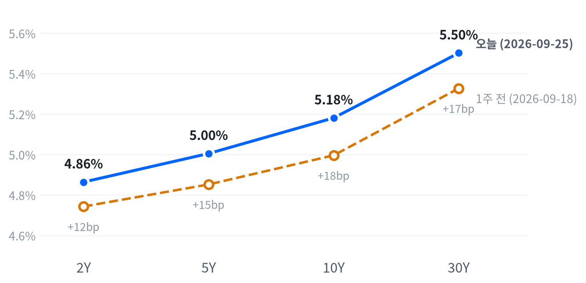

금요일 3대 지수가 일제히 올랐다(다우 +0.93%, S&P500 +0.51%, 나스닥 +0.48%). 호르무즈 해협 재개방 협상 기대에 유가가 2%대로 밀리며 위험선호가 살아났고 VIX는 5.11% 내렸다.
그런데도 10년물(5.181%)과 30년물(5.502%)은 최근 2년을 통틀어 가장 높은 자리를 다시 썼고, 2년물·5년물은 오히려 내려 2s10s 스프레드가 26.7bp에서 31.7bp로 벌어졌다. 지수와 장기금리가 동시에 최고치를 경신하는 조합은 밸류에이션 부담을 키우는 쪽이라고 판단한다.
오늘 하루를 지배한 것은 국채 커브다. 유가가 호르무즈 해협 재개방 협상 기대에 2%대 급락하고 CME FedWatch 10월 인상 확률도 주 후반 낮아진 것으로 보도됐지만, 정작 10년물과 30년물은 사상 최고권에 다시 섰다.
이 조합은 시장이 단기 정책금리 기대(2년물)와 장기 성장·기간프리미엄 기대(10년물·30년물)를 서로 다른 방향으로 재가격화하고 있다는 뜻으로 판단한다. 가장 최근 갱신된 분해(9월24일 기준)로는 10년물 상승분의 대부분이 기대인플레이션이 아니라 실질금리 쪽에서 왔다. 이는 유가 하락이 함의하는 인플레이션 완화보다 성장 기대·기간프리미엄 쪽 설명에 더 무게를 싣는다. 다만 이 분해가 오늘(9월25일)의 움직임을 직접 반영하지는 못해 하루 시차가 있다는 한계는 남는다.
지금은 방향성 베팅보다 관찰 단계로 판단한다. 9월16일 FOMC 인상 이후 금리 민감 섹터와 메모리·AI 인프라가 분리됐다는 가설은 오늘도 판정하지 못한 채 남았다. 오늘처럼 위험선호가 전반적으로 개선된 날에는 금융·메모리·AI인프라가 함께 오를 수 있어 이 가설을 가리기 어려웠고, 다음 관찰 시계는 실질금리 분해가 갱신되는 다음 세션과 10월28일 FOMC로 둔다.
커브가 계속 베어 스티프닝을 이어가며 장기 실질금리가 더 오르는데도 위험자산이 버틴다면 이 관찰 단계 판단은 무게가 실린다. 반대로 다음 세션의 실질금리 분해가 기대인플레이션 주도로 바뀌거나, 위험선호가 나쁜 날에도 금융·메모리·AI인프라가 함께 버틴다면 오늘의 해석은 재검토해야 한다.
| 지수 | 종가 | 등락률 | 기준일 |
|---|---|---|---|
| 닛케이225 | 66,364.20 | +1.30% | 9월25일 |
| 항셍 | 24,510.09 | -1.01% | 9월25일 |
| 상해종합 | 3,888.37 | -1.22% | 9월24일 |
| DAX | 25,408.64 | +0.56% | 9월25일 |
| FTSE100 | 10,695.30 | +0.14% | 9월25일 |
| 유로스톡스50 | 6,302.82 | +0.48% | 9월25일 |
| VIX | 14.87 | -5.11% | 9월25일 |
아시아 증시는 엇갈렸다. 지역 안에서도 갈려, 닛케이225(+1.30%)는 올랐지만 항셍(-1.01%)·상해종합(9월24일 기준 -1.22%)은 내려 지역 평균은 -0.31%에 그쳤다.
유럽은 흐름을 이어갔다. DAX(+0.56%)·FTSE100(+0.14%)·유로스톡스50(+0.48%)이 나란히 올라 지역 평균 +0.39%를 기록했고, 이 강세가 미국 개장 전 선물에도 이어졌다.
야간 선물은 새벽 사이 등락을 거듭했다. 대형주 선물(ES)은 오전 7시반(ET) 고점 7,801에서 저녁 8시반(ET) 저점 7,749까지 폭 0.67%로 움직였다. 나스닥 선물(NQ)도 같은 고점 시각에서 오후 4시 저점까지 폭 1.10%로 더 크게 흔들렸다. 현물은 이 등락 끝에 거의 그대로 출발했다. S&P500 +0.07%, 나스닥 +0.09%, 러셀2000 +0.13% 갭으로 보합 출발이었다.
마감 위치는 세 지수 모두 중단권이었다. 그 중 대형주 지수가 고점권 경계에 가장 가깝게 붙었고 나스닥·러셀2000은 그보다 여유 있는 중단권에서 마쳤다.
고점권·저점권 경계는 최근 2,259거래일 일간 종가 위치 이력의 사분위 구간을 다시 잰 기준이다.
이날 지수를 움직인 것은 개별 기업 뉴스였다. 델 테크놀로지스가 분기 AI서버 신규수주 609억달러(사상 최대)를 공개하고 연매출 가이던스를 상향했다. 마이크로소프트도 코파일럿 재설계와 목표주가 상향에 힘입어 올랐고, 이 둘이 다우(+0.93%)를 이끌었다. 유가는 호르무즈 해협 재개방 협상 기대에 급락해 위험선호를 뒷받침했다(VIX -5.11%). 반대로 골드만삭스가 하이퍼스케일러의 AI 투자 손익분기에 필요한 매출 규모(연 3,000억달러)를 문제 삼으면서 메타가 되돌렸다. 시간외로 뚜렷한 변수는 확인되지 않았다.
| 지수 | 종가 | 등락률 |
|---|---|---|
| 다우존스 | 51,828.62 | +0.93% |
| S&P500 성장주 | 143.28 | +0.65% |
| S&P500 | 7,743.41 | +0.51% |
| 나스닥 | 27,068.72 | +0.48% |
| S&P500 가치주 | 232.04 | +0.35% |
| 러셀2000 | 2,837.55 | +0.07% |
| 섹터 | 등락률 |
|---|---|
| 산업재 | +0.95% |
| 기술 | +0.80% |
| 금융 | +0.57% |
| 헬스케어 | +0.49% |
| 필수소비재 | +0.44% |
| 유틸리티 | +0.38% |
| 소재 | +0.24% |
| 경기소비재 | +0.22% |
| 부동산 | -0.22% |
| 에너지 | -0.89% |
| 커뮤니케이션서비스 | -0.90% |
S&P500(7,743)은 최근 2년(504거래일) 가운데 이보다 높았던 날이 아흐레뿐인 자리이고, 나스닥(27,069)은 그마저 나흘뿐인 자리라 3대 지수 모두 사상 최고권을 다시 확인했다. 오늘 등락폭 자체는 평소 하루 움직임과 비슷하거나(대형주 지수) 그보다도 더 잠잠해(나스닥) 새로운 변동성이 붙은 날은 아니다.
장중 흐름.나스닥은 개장(26,963) 직후 오전 10시 저점(26,878, -0.31%)까지 밀렸다가 낮 12시 고점(27,123, +0.59%)까지 되올라 강세를 지켰다. 대형주 지수도 같은 오전 10시 저점(-0.22%) 이후 오후 3시반 고점(+0.55%)까지 재차 올라 상승분을 종가까지 유지했다. 러셀2000은 오전 10시반 저점(-0.44%)에서 낮 12시 고점(+0.44%)까지 되돌렸으나 오후 들어 다시 밀려 보합에 그쳤다.
오늘 지수 상승(+0.51%) 가운데 기술이 +0.27%포인트로 가장 크게 끌어올렸고 금융(+0.062%포인트)·산업재(+0.055%포인트)·헬스케어(+0.045%포인트)가 뒤를 이었다. 반대로 커뮤니케이션서비스가 -0.121%포인트로 가장 크게 깎았고 에너지(-0.021%포인트)도 보탰다. 아홉 섹터로 설명되지 않는 부분은 +0.16%포인트로 크지 않아(소재·부동산은 회귀로 식별되지 않아 표에서 뺐다), 오늘의 등락은 대부분 섹터 기여로 설명된다.
오늘의 장에서 본 마감 위치(중단권)를 감안하면 이 상승을 광범위한 강세로 보기는 다소 이르다고 판단한다. 지수를 끌어올린 힘이 기술 한 업종에 크게 쏠렸고, 커뮤니케이션서비스는 오히려 지수를 깎아먹었다. 다우가 가장 크게 오른 것(+0.93%)도 델·마이크로소프트 두 종목 효과가 컸다는 점에서, 상승의 폭이 업종 전반으로 고르게 퍼졌는지는 다음 세션 확인이 필요하다.
| 만기 | 종가 | 전일比(bp) | 1주 전 | 주간 변화(bp) |
|---|---|---|---|---|
| 2Y | 4.864% | -3.1 | 4.743% | +12.1 |
| 5Y | 5.005% | -2.2 | 4.852% | +15.3 |
| 10Y | 5.181% | +1.9 | 4.996% | +18.5 |
| 30Y | 5.502% | +4.0 | 5.327% | +17.5 |

10년물(5.181%)과 30년물(5.502%)은 모두 최근 2년(504거래일)을 통틀어 오늘이 가장 높은 자리다. 이보다 높았던 날이 하루도 없다. 반면 2년물(4.864%)·5년물(5.005%)은 오늘 각각 3.1bp·2.2bp 내려, 한 주 내내 이어지던 전 구간 상승 흐름에서 단기 구간이 처음 방향을 바꿨다.
10년물 금리 변화의 원인은 실질금리다. 가장 최근 갱신된 분해(9월24일 기준, 하루 시차)로는 10년물 명목금리가 7bp 오르는 동안 실질금리가 9bp 올랐고 기대인플레이션은 오히려 2bp 내렸다. 5년물도 같은 날 기준 명목 4bp 중 실질금리가 5bp, 기대인플레이션이 -1bp로 같은 구도였다. 한 주로 넓혀 봐도 10년물 명목 24bp 상승분 전부가 실질금리 몫이고 기대인플레이션은 거의 움직이지 않았다.
실질금리 주도라는 결과는 성장 기대·기간프리미엄·수급(발행·QT) 쪽을 의심하게 한다. 10년 기간프리미엄은 9월18일 기준 0.96%포인트로 하루 2bp 올랐고, 최근 국채 입찰(9월24일 7년물, 응찰배율 2.42배·간접낙찰 49.1%)은 무난해 수급 부진으로 단정할 근거는 약하다. 신용시장도 아직 조용하다. 하이일드 스프레드는 9월24일 기준 2.8%포인트(전일 +7bp)로 소폭 벌어졌지만 투자등급 스프레드는 0.79%포인트(전일 +2bp)로 거의 그대로다.
2s10s 스프레드는 31.7bp로 전일(26.7bp) 대비 5.0bp 벌어졌고, 1주 전(25.3bp) 대비로도 6.4bp 넓어졌다. 5s30s도 49.7bp로 1주 전(47.5bp) 대비 2.2bp 커졌다. 전 구간 금리가 한 주 내내 오른 가운데 장기 구간이 단기보다 더 크게 뛴 베어 스티프닝이 이어지고 있다고 판단한다.
5년 뒤 5년 금리는 9월24일 기준 명목 5.33%(전일 대비 +10bp)다. 위험 프리미엄이 섞인 값이라 시장의 기대라고 단정할 수는 없지만, 가장 먼 구간의 금리까지 함께 뛰었다는 것은 이번 금리 재평가가 단기 이벤트가 아니라 더 긴 구간까지 번지고 있다는 뜻으로 읽을 수 있다.
| 통화쌍 | 종가 | 등락률 |
|---|---|---|
| DXY | 100.97 | -0.32% |
| USD/KRW | 1,367.36 | +0.36% |
| USD/JPY | 158.81 | +0.34% |
| EUR/USD | 1.1375 | -0.06% |
달러지수(DXY)는 100.97로 같은 길이의 구간 한가운데쯤에 머물러 있다. 반면 원화(1,367원)는 그 구간 가운데 이보다 낮았던 날이 37일뿐인 자리로, 오늘 소폭 밀렸어도 여전히 강한 쪽에 서 있다. 엔/달러(158.81엔)는 높은 쪽 20% 안에 든다.
달러의 방향은 오늘 통화쌍마다 엇갈렸다. 달러지수(DXY)는 -0.32%로 밀렸지만 원화(USD/KRW +0.36%)·엔화(USD/JPY +0.34%) 대비로는 오히려 달러가 강했고 유로(EUR/USD -0.06%) 대비로도 소폭 강했다. 이 세 통화쌍만으로는 지수 전체의 하락을 설명할 수 없어, DXY에 포함된 다른 통화(파운드·캐나다달러 등) 대비 약세가 더 컸을 가능성이 있다고 본다. 다만 이 부분은 이번 자료로 확인하지 못했다.
장중 흐름.엔/달러는 새벽 1시(ET) 고점(158.85엔)에서 오후 2시반(ET) 저점(156.93엔)까지 하루 안에서도 폭넓게 움직였다.
| 품목 | 종가 | 등락률 |
|---|---|---|
| WTI | $92.41 | -2.33% |
| Brent | $104.32 | -2.14% |
| 천연가스 | $3.20 | -3.06% |
| 금 | $4,321.20 | +0.54% |
WTI(92.41달러)는 같은 길이의 구간 가운데 높은 쪽 12% 안에 드는 자리이고, 금(4,321달러)은 그 한가운데쯤이다. 오늘 WTI가 2.33% 밀리며 최근 흐름의 상단에서 한발 물러났지만 금은 오히려 0.54% 올랐다.
오늘 유가 하락은 지정학 완화 기대로 판단한다. 호르무즈 해협 단계적 재개방 협상 기대가 번지면서 WTI가 개장가(93.10달러) 대비 정오 무렵 저점(91.51달러, -1.71%)까지 밀렸다가 소폭 되올라 92.41달러로 마감했다. 브렌트도 2.14% 내려 함께 움직였다. WTI-브렌트 스프레드는 11.91달러로, 브렌트가 WTI보다 높게 거래되는 통상적인 구도가 유지됐다.
천연가스는 3.06% 내렸지만 오늘 자료로 확인되는 개별 원인은 없다. 국채 실질금리는 최근 갱신된 분해 기준(9월24일)으로 하루 9bp(10년물) 올랐다. 그런데도 금은 0.54% 올라, 금과 금리의 최근 상관관계(반대로 움직이는 느슨한 흐름)에 비해서는 저항력이 있었던 하루로 판단한다.
장중 흐름.WTI는 오전 11시 고점(94.23달러, +1.21%)을 찍은 뒤 정오 저점(91.51달러, -1.71%)까지 급락해 장중 낙폭이 종가보다 컸다. 금은 오전 7시 고점(4,352달러, +1.09%) 이후 오전 10시 저점(4,289달러, -0.36%)까지 밀렸다가 소폭 되올라 마감했다.
미국 경기 국면은 성장·물가 모두 둔화 방향인 연착륙을 9월1일부터 19영업일째 유지한다고 판단한다. 오늘 새로 나온 경제지표(내구재 주문, 미시간대 소비자심리·기대인플레이션)가 신규 발표였지만, 어느 쪽도 좌표를 옮길 만큼 결정적이지는 않았다. 내구재 주문(8월, 전월비 -0.02%)이 생산·활동축 점수를 끌어올려 방향이 악화에서 보합으로 바뀌었고, 이 영향으로 성장축 점수는 -0.065까지 올라(9월24일 -0.303) 0에 가까워졌다. 물가축 점수는 -0.648로 오히려 더 낮아져 둔화 방향을 강화했다. 두 점수 모두 아직 현재 좌표의 경계 안에 있어 국면 이름은 그대로 간다. 국면을 다시 열 수 있는 다음 계기는 9월29일 JOLTS, 9월30일 PCE 물가, 10월2일 고용상황이다.
고용축은 개선이라고 판단한다(일곱 지표 중 다섯이 개선). 계속 실업수당 청구가 뚜렷하게 개선됐고(4주 평균 178.7만건에서 174.4만건으로) 실업률도 3개월 평균 기준으로 완만히 개선됐다(4.30%에서 4.13%로). 다만 비농업 고용은 8월 한 달로는 +16.2만건까지 뛰었지만 3개월 평균은 오히려 +14.2만건에서 +7.1만건으로 둔화돼(완만한 악화) 상충이 남는다. 고용축 +0.377
| 지표 | Actual | Forecast | Previous | 발표일 | 컨센 대비 | 직전 대비 | 추세 |
|---|---|---|---|---|---|---|---|
| 구인건수(JOLTS, 7월) | 7,271K | — | 7,182K | 2026-07 기준월 | 개선 | 개선(미미) · 3개월 평균 7,131K → 7,330K | |
| 신규 실업수당 청구(9월19일 마감 주간) | 197,000 | — | 198,000 | 2026-09-19 주간 | 개선 | 개선(미미) · 4주 평균 206K → 202K | |
| 신규 청구 4주 평균 | 202,250 | — | 204,000 | 2026-09-19 주간 | 개선 | 악화(미미) · 4주 평균 202K → 205K | |
| 계속 실업수당 청구(9월12일 마감 주간) | 1,719,000 | — | 1,717,000 | 2026-09-12 주간 | 악화 | 개선(뚜렷) · 4주 평균 1,787K → 1,744K | |
| 비농업 고용 변화(8월) | +162K | — | +21K | 2026-08 기준월 | 개선 | 악화(완만) · 3개월 평균 +142K → +71K | |
| 실업률(8월) | 4.1% | — | 4.1% | 2026-08 기준월 | 보합 | 개선(완만) · 3개월 평균 4.30% → 4.13% | |
| 평균시간당임금 MoM(8월) | +0.27% | — | +0.16% | 2026-08 기준월 | 개선 | 개선(완만) · 3개월 평균 +0.20% → +0.23% |
생산·활동축은 보합으로 판단한다(다섯 지표 중 하나만 개선, 나머지는 반대 방향). 오늘 새로 나온 내구재 주문은 완만하게 악화됐다(3개월 평균 +1.95%에서 +0.47%로) — 8월 헤드라인 자체는 거의 변화가 없었지만(-0.02%) 추세로는 둔화 방향이다. 신규주택 판매는 미미하게 개선됐지만(3개월 평균 645K에서 666K로) 기존주택 판매는 미미하게 악화돼(408.0만에서 405.7만 건으로) 두 주택 지표가 반대로 갈렸다. 생산·활동축 -0.193
| 지표 | Actual | Forecast | Previous | 발표일 | 컨센 대비 | 직전 대비 | 추세 |
|---|---|---|---|---|---|---|---|
| 산업생산 MoM(8월) | +0.02% | — | +0.20% | 2026-08 기준월 | 악화 | 보합 · 3개월 평균 +0.24% → +0.14% | |
| 내구재주문 MoM(8월) | -0.02% | -0.3% | +0.86% | 2026-09-25(Census) | ▲ 상회 | 악화 | 악화(완만) · 3개월 평균 +1.95% → +0.47% |
| 신규주택판매(8월) | 684K | — | 643K | 2026-08 기준월 | 개선 | 개선(미미) · 3개월 평균 645K → 666K | |
| 기존주택판매(8월) | 398.0만 | — | 406.0만 | 2026-08 기준월 | 악화 | 악화(미미) · 3개월 평균 4,080K → 4,057K | |
| 실질GDP QoQ 연율(1분기) | +1.5% | — | +2.1% | 2026년 1분기 기준 | 악화 | — |
내구재 주문은 8월 전월비 -0.02%(사실상 보합, 총계 3,386억달러)로, CNBC가 인용한 컨센서스(-0.3%)보다 나은 결과였다.
Census국은 운송장비 주문이 3개월 중 세 번 감소하며 7억달러(-0.6%, 1,141억달러) 줄어 전체 헤드라인 부진을 주도했다고 밝혔다. 반면 통상 기업 설비투자 선행지표로 쓰이는 비국방·항공기 제외 핵심 자본재 신규수주는 +1.6%(876.29억달러)로 견조했다. 운송 제외 기준으로는 +0.3%, 국방 제외 기준으로는 +0.1%로, 두 기준 모두 헤드라인보다 나은 흐름이었다. 비항공 민간기 주문은 전월 +12.0% 급등 뒤 -4.3%로 반락해 항공기 주문의 월별 변동성을 다시 보여줬다. 7월 총제조업 신규수주는 6,636억달러에서 6,628억달러로 소폭 하향 개정됐다.
헤드라인만 보면 컨센서스보다 나은 「거의 보합」이라 시장엔 우호적으로 읽혔지만, 그 이유가 핵심 자본재 수요 강세이지 헤드라인 자체의 개선은 아니라고 판단한다. 기업 투자심리가 아직 살아있다는 뜻이라 연준의 인상 우위 판단과 상충하지 않으며, 위 생산·활동축을 개선 쪽으로 강하게 밀지는 못해 보합 판정을 지지한다.
출처: 센서스국 내구재 주문 보도자료(8월분). 원문 표기는 전월비 -0.02%, 핵심 자본재 +1.6%다.
소비축은 악화라고 판단한다(둘 중 하나가 악화). 소매판매는 8월 전월비 +1.24%로 크게 반등했지만 3개월 평균은 오히려 +1.11%에서 +0.34%로 낮아져 뚜렷하게 악화됐다 — 한 달의 반등이 앞선 부진을 메우지 못했다는 뜻이다. 오늘 새로 반영된 미시간대 소비자심리(8월, 51.7)는 3개월 평균 기준으로 미미하게 개선됐지만(49.3에서 52.1로), 대학이 이미 공개한 9월 확정치(48.1)는 정반대로 4개월래 최저까지 떨어졌다. 소비축 -0.378
| 지표 | Actual | Forecast | Previous | 발표일 | 컨센 대비 | 직전 대비 | 추세 |
|---|---|---|---|---|---|---|---|
| 소매판매 MoM(8월) | +1.24% | — | -0.54% | 2026-08 기준월 | 개선 | 악화(뚜렷) · 3개월 평균 +1.11% → +0.34% | |
| 미시간대 소비자심리(8월) | 51.7 | — | 55.2 | 2026-09-25(U. Michigan) | 악화 | 개선(미미) · 3개월 평균 49.3 → 52.1 |
미시간대 소비자심리(8월 확정치)는 51.7로 전월(55.2) 대비 내렸고, 같은 조사의 1년 기대인플레이션은 4.0%로 전월(4.2%)보다 낮아졌다.
다만 대학이 공개한 원문에는 이미 9월 확정치가 담겨 있다. 소비자심리지수는 48.1(4개월래 최저)까지 내렸고, 1년 기대인플레이션은 지난달 4.0%에서 이번 달 4.6%로 뛰어 6월 이후 최고라고 원문이 직접 밝혔다. 5년 장기 기대인플레이션도 3.3%에서 3.4%로 소폭 올랐다. 조사를 이끈 조앤 슈 이사는 현재·향후 개인재정 평가가 모두 약 10% 나빠졌고 유가 상승과 무역분쟁 재점화 우려로 단기 기업여건 전망이 급락했다고 밝혔다.
캐논 지표(8월 51.7)만 보면 소비축은 미미한 개선으로 읽히지만, 원문이 보여주는 최신 그림은 정반대로 심리가 재차 악화되고 기대인플레이션이 급등한 모습이라고 판단한다. 이 데이터 시차가 다음 자료 갱신에 반영되면 소비·물가 두 축의 점수가 함께 흔들릴 수 있다.
출처: 미시간대 소비자심리 조사(9월 확정치). 원문 표기는 지수 48.1, 1년 기대인플레 4.6%다.
물가축은 둔화라고 판단한다(여덟 지표 중 여섯이 둔화). 소비자물가 전월비가 뚜렷하게 둔화됐고(3개월 평균 +0.66%에서 +0.02%로) 생산자물가도 뚜렷하게 둔화됐다(3개월 평균 +0.79%에서 +0.12%로). 다만 PCE 물가 전년비는 오히려 완만히 재가속됐다(3개월 평균 3.41%에서 3.84%로). 오늘 새로 반영된 미시간대 1년 기대인플레이션(8월 4.0%)도 3개월 평균 기준으로는 교착 상태이지만, 대학이 공개한 9월 확정치(4.6%)는 뚜렷한 재가속을 가리켜 물가축 판정과 상충한다. 물가축 -0.648
| 지표 | Actual | Forecast | Previous | 발표일 | 컨센 대비 | 직전 대비 | 추세 |
|---|---|---|---|---|---|---|---|
| CPI YoY(8월) | 3.71% | — | 3.54% | 2026-08 기준월 | 상승 | 교착 · 3개월 평균 3.85% → 3.66% | |
| CPI MoM(8월) | +0.40% | — | +0.07% | 2026-08 기준월 | 상승 | 둔화(뚜렷) · 3개월 평균 +0.66% → +0.02% | |
| Core CPI YoY(8월) | 2.76% | — | 2.79% | 2026-08 기준월 | 하락 | 교착 · 3개월 평균 2.87% → 2.79% | |
| Core CPI MoM(8월) | +0.29% | — | +0.22% | 2026-08 기준월 | 상승 | 둔화(완만) · 3개월 평균 +0.26% → +0.16% | |
| PPI 최종수요 MoM(8월) | +0.40% | — | +0.07% | 2026-08 기준월 | 상승 | 둔화(뚜렷) · 3개월 평균 +0.79% → +0.12% | |
| PCE 물가 YoY(7월) | 3.70% | — | 3.72% | 2026-07 기준월 | 하락 | 재가속(완만) · 3개월 평균 3.41% → 3.84% | |
| Core PCE YoY(7월) | 3.34% | — | 3.34% | 2026-07 기준월 | 보합 | 재가속(미미) · 3개월 평균 3.21% → 3.38% | |
| 미시간대 1년 기대인플레(8월) | 4.0% | — | 4.2% | 2026-09-25(U. Michigan) | 하락 | 교착 · 3개월 평균 4.43% → 4.27% |
직전 대비는 Actual을 Previous와 비교한 것이고, 추세는 최근 3개월 평균을 그 앞 3개월 평균과 비교한 것입니다(주간 실업수당 청구는 4주 평균끼리). 추세의 세기는 그 지표가 평소 움직이는 폭에 견준 크기이고, 작은 변화는 보합으로 봅니다. 분기 지표인 GDP는 두 비교가 같은 숫자를 보므로 직전 대비만 싣습니다.
연준의 다음 수는 10월28일 FOMC에서의 추가 25bp 인상 쪽으로 무게가 실린다고 판단한다. CME FedWatch 기준 이 확률은 1주일 전 49%에서 9월24일 기준 75% 이상으로 뛰었다(CNBC 보도). 다만 오늘 시장이 보인 신호는 조금 달랐다. CNBC(9월25일 20시17분 UTC)는 이 확률이 금요일 저녁 64%까지 낮아졌다고 전했고 Investing.com(같은 날 오전)은 70%로 보도해, 매체·시각별 스냅숏 차이는 있지만 주중 고점(73~75%) 대비 저녁으로 갈수록 낮아지는 방향이 관찰된다. 이 되돌림은 아직 공식 정책 경로 판단을 바꿀 만큼(전일 대비 15%포인트 이상) 확인되지는 않았다.
이 판단은 다음 FOMC 성명·회견에서 이미 확인된 인상 신호를 되돌리는 언급이 나오거나 물가·고용 지표가 예상보다 뚜렷하게 냉각되면 재검토한다.
채권·귀금속 모두 우호라고 판단한다. 물가가 공식적으로 둔화 국면에 들어서면 실질금리가 정점을 지나 정책 완화 재개 기대가 장기물과 금 보유비용을 함께 낮추는 경로다. 다만 실질금리 자체가 기간프리미엄·수급 요인으로 계속 오르는 국면에서는 이 경로가 가격에 반영되기까지 시차가 있다. 확인 지표는 core PCE 전년비가 3.0%를 밑돌 만큼 추가로 둔화되는지, 10년 실질금리(TIPS)가 다시 하락하는지다.
주식·에너지 모두 중립이라고 판단한다. 성장 쪽 점수가 0에 가까워졌지만 물가 둔화 흐름도 함께 진행돼 두 힘이 상쇄되고, 지정학 리스크 프리미엄은 3~6개월 구조축이 아니라 이벤트성 변수라 OPEC+ 증산 여력과 이란 리스크가 서로 상쇄된다. 확인 지표는 ISM 제조업 PMI가 50을 웃도는 재가속을 이어가는지, 10년물이 4.5%를 밑도는지, 호르무즈 해협 통항과 운송 정상화가 이어지는지다.
FX는 비우호라고 판단한다. 성장 정체 속 물가 둔화가 이어지면 실질금리 스프레드 축소 기대가 달러 약세 경로를 지지하지만, 안전자산 수요와 상대적으로 높은 미국 금리 수준이 이 경로에 맞서는 힘으로 계속 작용한다. 확인 지표는 달러지수가 20일 기준 3% 이상 추가로 빠지는지, CME FedWatch의 인하 확률이 확대되는지다.
메모리는 우호, AI 인프라는 중립으로 갈린다. 메모리는 소비축 부진과 무관하게 기업 AI 데이터센터 투자 사이클이 D램·낸드 수급을 견인하는 독립적인 성장 경로를 타지만, AI 인프라는 캐펙스 사이클 자체는 구조적으로 우호적이어도 장기금리 레벨이 높은 구간에서 할인율 상승이 고성장주 밸류에이션을 압박하는 경로가 이를 상쇄한다. 매크로 국면과 AI 캐펙스 사이클이 서로 다른 시계에서 움직인다는 뜻이다. 확인 지표는 마이크론 등 주요업체의 회계연도 가이던스 상향이 이어지는지, 30년물이 5.4%를 웃돌아 추가로 오르는지, 하이퍼스케일러의 3분기 캐펙스 가이던스다.
채권시장은 오늘 내구재 주문과 미시간대 소비자심리 두 발표에 특별히 반응하지 않은 것으로 보인다. 내구재 주문은 컨센서스(-0.3%)를 상회했지만 핵심 자본재 강세라는 세부 내용은 헤드라인 서프라이즈만큼 즉각 반영되지 않았다. 오늘 금리 움직임(10년물 +1.9bp, 30년물 +4.0bp)은 두 발표보다 호르무즈 해협 협상 기대와 FedWatch 확률 되돌림 쪽에 더 크게 반응한 것으로 판단한다.
마이크로소프트(+3.66%)가 시스템소프트웨어 업종에서 지수 기여 상위였다. 코파일럿을 Home·Code·Autopilot 기능으로 재설계해 공개했고, 오펜하이머·스티펠이 목표주가를 상향했다(오펜하이머 570달러).
델 테크놀로지스(+5.01%)와 애플(+1.53%)이 기술하드웨어 업종에서 지수 기여 상위이자 이상 등락으로 함께 묶였다. 델은 분기 AI서버 신규수주 609억달러(사상 최대)·백로그 950억달러를 공개하고 연매출 가이던스를 1,920억달러로 상향했다. 애플의 개별 상승 재료는 확인되지 않았다.
메타(-3.33%)가 인터랙티브 미디어 업종에서 지수 기여 하위였다. 골드만삭스가 하이퍼스케일러들의 AI 투자 손익분기에 필요한 매출 규모(연 3,000억달러)를 문제 삼으면서, 최근 2주 '뮤즈' 흥행으로 약 13% 급등했던 주가가 되돌렸다.
테슬라(-1.54%)가 자동차 업종에서 지수 기여 하위였다. 네바다 세미트럭 생산 개시 발표에도 애널리스트 목표주가 하향과 유럽 FSD 승인 지연이 겹쳤다.
블룸에너지(+8.27%)가 전기부품·장비 업종에서 이상 등락으로 분류됐다. 대형주 지수 편입에 따른 패시브 자금 매수에 AI 데이터센터 전력 수요 프로젝트(얼라인드 데이터센터스 2GW)와 UBS·클리어스트리트·미즈호의 목표주가 상향이 겹쳤다.
메모리·AI 인프라 바스켓의 최근 20거래일 초과수익률을 성장−가치·대형−소형·반도체 세 축과 그 세 축으로 설명되지 않는 몫으로 나눠 보면, 메모리는 60거래일 계수와 252거래일 계수의 방향이 반도체 축(60거래일 기준 +1.46)에서만 같아 이 축만 인용할 만하다고 판단한다. 반도체 축이 메모리 초과수익(+7.96%포인트, 시장 민감도 2.22)의 대부분을 설명하고, 성장−가치·대형−소형 두 축은 최근과 장기 방향이 엇갈려 인용하지 않는다. AI 인프라는 세 축 모두 방향이 일치해 전부 인용할 만하다. 반도체 축(+10.23%포인트)이 가장 크게 기여했고, 대형−소형 축은 소형주 쏠림 탓에 -7.52%포인트로 깎았으며 성장−가치 축은 +1.95%포인트를 보탰다(초과수익 +1.79%포인트, 시장 민감도 3.02). 세 축으로 설명되지 않는 몫은 메모리 -2.48%포인트, AI 인프라 -2.86%포인트로 크지 않다.
9월22일 처음 연 질문은 9월16일 FOMC 인상 이후에도 메모리·AI 인프라가 강세를 이어가는데 금리 민감 섹터만 약세인 것이 구조적 분리인지 우연의 일치인지였다. 9월23~24일 발행분도 이 질문에 답하지 못했고, 마감은 10월28일 FOMC로 두었다.
오늘의 증거로도 이 가설은 다시 답을 내지 못한다고 판단한다(판정: 판별 불가). 금융 섹터는 오늘 +0.57%로 완연히 회복했고 메모리(마이크론 +0.16%·웨스턴디지털 +1.44%)·AI 인프라(마벨 +1.15%·버티브 +3.25%)도 나란히 올랐지만, 오늘은 유가 급락과 위험선호 회복(VIX -5.11%)이 겹친 광범위한 상승일이었다. 금융·메모리·AI인프라가 함께 오른 것이 금리 민감도 차이를 반영한 결과인지, 단순히 전반적 위험선호 개선에 올라탄 것인지는 가려지지 않는다. 2s10s 스프레드가 오늘도 5.0bp 더 벌어졌다는 사실 자체는 금리 채널이 여전히 살아있다는 뜻이지만, 오늘 세션만으로는 방향과 메커니즘 모두 판정할 수 없다.
오늘 새로 연 질문은 호르무즈 해협 재개방 협상 기대가 FedWatch 되돌림과 커브 스티프닝을 동시에 설명하는가이다. 2년물(-3.1bp)·5년물(-2.2bp)은 내렸지만 10년물(+1.9bp)·30년물(+4.0bp)은 오히려 올라 2s10s 스프레드가 26.7bp에서 31.7bp로 벌어졌다. 같은 날 브렌트(-2.14%)·WTI(-2.33%)도 함께 밀렸다. 메커니즘 가설은 호르무즈 재개방 기대가 에너지발 인플레이션 서프라이즈 리스크를 낮춰 단기 정책금리 기대(2년물·FedWatch)를 끌어내리는 동안, 10년물·30년물은 성장 모멘텀과 기간프리미엄에 더 민감해 반대로 움직였다는 것이다. 다만 이 가설의 통화 다리는 이번 발행이 쓰는 최종 데이터로 재확인되지 않는다. 애초 관찰은 이전 스냅숏 기준 달러 약세·엔 강세였지만, 이번 발행이 쓰는 최종 데이터는 오히려 엔·원 모두 약세(USD/JPY +0.34%, USD/KRW +0.36%)를 가리켜 부호가 반대다. 채권·상품 다리(2년물·5년물 하락, 10년물·30년물 상승, 유가 하락)는 그대로 유효하지만, 통화 다리는 데이터 시차로 인한 잠정치였다는 점을 밝혀 둔다.
다음 확인은 두 갈래다. 원래 가설은 다음 세션에도 금융·메모리·AI인프라가 개별 재료 없이 금리와 같은 방향으로 움직이는지를 본다. 확인 시점은 다음 발행일, 최종 마감은 10월28일 FOMC로 불변이다. 신규 가설은 브렌트·2년물·FedWatch 확률이 앞으로도 같은 방향으로 동조하는지를 9월28일부터 관찰하며, 반증은 브렌트가 재반등하는데도 2년물이 계속 하락하는 경우다. 시험 마감은 10월9일이다.
이 보고서의 시세는 Yahoo Finance와 네이버 국채 종가, 경제지표는 FRED와 각 발표 기관(BLS·BEA·Census 등), 그 밖의 뉴스·해설은 본문에 밝힌 매체(CNBC 등)에서 가져왔다. 이 보고서는 투자 자문이 아니며 특정 자산의 매수·매도를 권유하지 않는다. 투자 판단과 그 결과에 대한 책임은 전적으로 투자자 본인에게 있다.